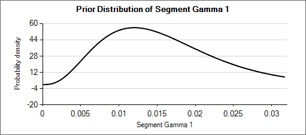
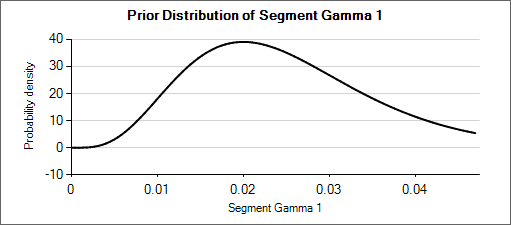
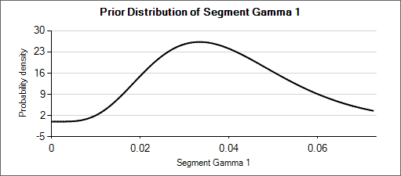
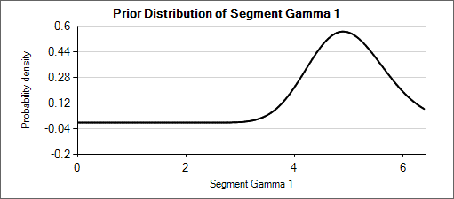
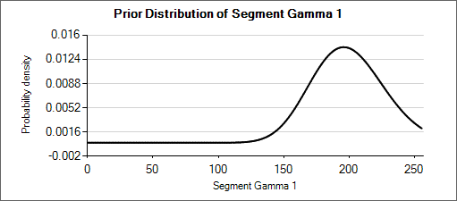

The Design Tab allows the user to specify how control responses, treatment responses and longitudinal responses are modeled, how subjects are allocation, the timing of interims, and the criteria for stopping groups or the study for early success or futility, and the criteria for judging final success or futility of each group and the study. Wherever applicable, this user guide is separated by type of endpoint used (continuous/dichotomous or time-to-event).
Control Model / Harzard Model
If no control arm is present then comparison is with historical mean responses.
If control arms are present they can be modeled either:
Separately with a simple Normal prior for the response (continuous endpoint) or the log odds of the rate of response (dichotomous endpoint) on the control arm,
separately with the use of a ‘Hierarchical Prior’, where data from prior studies is incorporated via a hierarchical model,
or jointly in a hierarchical model.
Historical Control
If on the Study > Study Info tab, ‘include historical control’ has been selected then the control model is simply the specified fixed mean response on control in each group.
Controls modeled separately
If on the Study > Study Info tab, ‘include control treatment arm’ has been selected then the control model can be separate models or a hierarchical model across the groups.
If controls are modeled separately then the control arm in each group has its own prior, which can be either:
A mean and standard deviation for a Normally distributed prior for the response (continuous endpoint) or the log-odds response (dichotomous endpoint) on the control
A Hierarchical Prior (BAC).
If a Hierarchical Prior for a control arm (Bayesian Augmented Control) is specified for the control arm in a group then the user specifies:
The sufficient statistics for each historic study to be included, these are: the observed mean response of the control group, the number of subjects in the control group and the SD of the responses across the group. This data can be ‘down-weighted’ by reducing the number of subjects entered relative to the number in the actual study.
The hyper-parameters for the hierarchical model. These are the mean and standard deviation for a Normally distributed prior for the mean of the hierarchical model and the parameters for an Inverse-Gamma distributed prior for the variance of the hierarchical model. As with all Inverse-Gamma priors these can be specified as a mean and a weight or more conventional Alpha and Beta parameters.
Unless the intent is to add information that is not included in the historic studies, the hyper parameters can and should be set so that they are ‘weak’ priors, centered on the expected values.
In this case the following would be reasonable:
- Set the prior mean value for Mu as the unweighted mean of the means (continuous endpoint) or log-odds (dichotomous endpoint) of the historic studies
- Set the prior SD for Mu equal to at least the largest difference between the mean (continuous endpoint) or log-odds (dichotomous endpoint) for any historic study and the unweighted mean (continuous endpoint) or log-odds (dichotomous endpoint) of all the historic studies.
- Set the mean for tau to the same value as the prior SD for Mu.
- Set the weight for tau to be < 1.
One can traverse the spectrum from ‘complete pooling of data’ to ‘completely separate analyses’ through the prior for tau. If the weight of the prior for tau is small (relative to the number of studies), then (unless set to a very extreme value) the mean of the prior for tau will have little impact and the degree of borrowing will depend on the observed data.
To give some prior preference towards either pooling or separate analysis the weight for tau has to be significant > the number of historic studies. Then to have a design that is like pooling all the historic studies the mean for tau needs to be small (say 10% or less of the value suggested above). Alternatively, to have a design that is like separate analyses with no borrowing from the historic studies, the value for tau needs to be large (say 10x or more the value suggested above).
The best way to understand the impact of the priors is to try different values and run simulations. The advantage of a Hierarchical Prior is that it can, through the pooling effect, improve the precision of the estimate of the response on control – possibly allowing a reduced sample size allocated to the control arm. The disadvantage is that if the observed response on control is different from that in the historic studies, a degree of bias towards the rate in the historic studies will be observed in the posterior estimate. The art of using a Hierarchical Prior is to determine the degree of bias that would be acceptable and find the degree of pooling that corresponds to that.
Hierarchical model across groups
This is similar to a Hierarchical prior except that there is only one hierarchical model (with Hierarchical Priors there is one per group) and instead of modeling the results from the current study and past studies it models the results from the different groups in the current study only. This borrows information across the results of the control arms in the different groups – borrowing more the more the results look similar, borrowing less the more they diverge.
The hierarchical model is a normal distribution of the mean responses (continuous endpoint) or log-odds of the rates (dichotomous endpoint) on the control arms in all the groups. The user enters the priors for the hyper-parameters of the hierarchical model. These are the mean and standard deviation of a Normally distributed prior for the mean of the hierarchical model and the parameters for an Inverse-Gamma distributed prior for the variance of the hierarchical model. As with all Inverse-Gamma priors these can be specified as a mean and a weight or more conventional Alpha and Beta parameters.
Unless the intent is to add information that is not observed in the study, the hyper parameters can and should be set so that they are ‘weak’ priors, centered on the expected values.
In this case the following would be reasonable:
- Set the prior mean value for Mu as the expected mean control response (continuous endpoint) or log-odds of the response (dichotomous endpoint)
- Set the prior SD for Mu equal to at least the largest reasonably expected difference in mean response (continuous endpoint) or log-odds of the response (dichotomous endpoint) of the control arms across the groups.
- Set the mean for tau to the same value as the prior SD for Mu.
- Set the weight for tau to be < 1.
To force borrowing (near pooling of data) between the groups, set a small prior mean of tau and a weight greater than the number of groups, combined with a weakly informative prior for mu; the group means will come together near the sample weighted average of the sample means.
To limit the borrowing between the groups, set a large tau and a weight equal to the number of groups or more. This can be used if, with a weak prior for tau, the borrowing across groups seems too great. However, achieving the desired balance will require simulation of a number of scenarios and trial and error.
If some borrowing can be accepted, this can result in greater precision in the estimates for the control – reducing the error in the estimate of the treatment difference and allowing the option of unbalancing the allocation between control and treatment.
If it’s required that there be no borrowing of data across the groups in the estimation of the response on the control arms then the best option is to model controls separately.
To use hierarchical modeling and include a prior expectation for the response on control, set the mean for Mu to the prior expectation, set small values for the SD of Mu and the mean of tau, and give the prior for tau a weight equal to the number of groups or more. Again, achieving the desired balance will require simulation of a number of scenarios and trial and error.
Hierarchical Model plus Clustering
After selecting “Hierarchical model across groups”, if “Use Clustering” is also checked then the specified prior is a prior for an arbitrary number of distributions each providing a hierarchical prior to an arbitrary selection of the groups. As with the hierarchical model, the smaller and stronger the prior is on tau the greater the borrowing, (closer to pooling) and the larger and stronger the prior is on tau the weaker the borrowing (closer to separate analysis). The weaker the prior on tau, the more the posterior value of tau is determined by the spread of the control means in that cluster.
The “Dp scale parameter” is the Dirichlet Process parameter ‘α’ in the description of the model in the Enrichment Design Specification document. The larger the value of ‘α’ the more process tends to place groups in new clusters – so there is less borrowing, in experiments using values of ‘α’ from 1 to twice the number of groups, this was a much smaller effect than varying tau from 25% of the expected treatment difference to 200% of the expected treatment difference.
We are still learning about how best to specify priors for this model and will supply more guidance once we have a better understanding. In the meantime like us you have the ability to run simulations with different priors and explore the impact on the operating characteristics in the setting of interest.
If no control arm is present then comparison is with historical rates.
If control arms are present they can be modeled either:
Separately using a piecewise exponential model, specifying the junctions of the different model segments and the parameters for the Gamma prior for the hazard rate in each segment.
Separately with the use of ‘Bayesian Augmented Control’ (BAC) where data from prior studies is incorporated via a hierarchical model,
Jointly in a hierarchical model,
or using the Cox proportional hazard model.
Historical Control
If on the Study > Study Info tab, ‘include historical control’ has been selected then the control model is simply the hazard rate on control in each group. Different time segments can be specified for the hazard rates independently from time segments used elsewhere such as on the Virtual Subject Response > Control Hazard Rates, Dropout or Treatment Model tabs. And then the hazard rate must be specified for each time segment for each group.
[Note that currently, unlike the Virtual Subject Response > Control Hazard tab, the time units used for the rates on this tab cannot be specified, they must be entered as rate per week].
Controls modeled separately
If on the Study > Study Info tab, ‘include control treatment arm’ has been selected then the control model can be separate models or a hierarchical model across the groups.
If controls are modeled separately then the control arm in each group has its own prior which is a gamma distribution for the hazard rate for each time segment. The user specifies:
The segment intervals for the control model (across all groups)
A mean (in events per weeks) and weight (in subjects) for the prior gamma distribution for the control hazard rate for each group and segment.
Optionally supplemented by a Hierarchical Prior (BAC)
If Hierarchical Prior for Control is specified for the control arm in a group, then in addition to the segment intervals (common across all groups) and the parameters of the Gamma prior distribution, then on a separate “Hierarchical Prior” tab the user specifies:
The sufficient statistics to be included from each historic study for each segment, these are: the observed number of events in the control group and the exposure time in subject weeks. The information from the prior study can be ‘down-weighted’ by reducing, pro-rata, the number of events and exposure time.
The hyper-parameters for the hierarchical model. These are the mean and standard deviation for a Normally distributed prior for the log hazard ratios of the event rates of the historical studies. The prior for the mean is the mean and standard deviation of a Normal distribution and prior for the standard deviation is an Inverse-Gamma distributed prior for the variance of the hierarchical model. As with all Inverse-Gamma priors these can be specified as a mean and a weight or more conventional Alpha and Beta parameters.
Unless the intent is to add information that is not included in the historic studies, the hyper parameters can and should be set so that they are ‘weak’ priors, centered on the expected values.
In this case the following would be reasonable:
- Set the prior mean value for Mu as the mean of the log-hazard ratios of the event rates of the control arm and the historic studies (usually this will be 0)
- Set the prior SD for Mu equal to at least the largest log hazard ratio of the event rates for the historic studies.
- Set the mean for tau to the same value as the prior SD for Mu.
- Set the weight for tau to be < 1.
One can traverse the spectrum from ‘complete pooling of data’ to ‘completely separate analyses’ through the prior for tau. If the weight of the prior for tau is small (relative to the number of studies), then (unless set to a very extreme value) the mean of the prior for tau will have little impact and the degree of borrowing will depend on the observed data.
To give some prior preference towards pooling or separate analysis the weight for tau has to be large (relative to the number of historic studies) – to have a design that is like pooling all the historic studies the mean for tau needs to be small (say 10% or less of the value suggested above). For there to be no borrowing from the historic studies the value for tau needs to be large (say 10x or more the value suggested above).
The best way to understand the impact of the priors is to try different values and run simulations. The advantage of a Hierarchical Prior is that it can, through the pooling effect, improve the precision of the estimate of the response on control – possibly allowing a reduced sample size allocated to the control arm. The disadvantage is that if the observed response on control is different from that in the historic studies a degree of bias towards the rate in the historic studies will be observed in the posterior estimate. The art of using a Hierarchical Prior is to determine the degree of bias that would be acceptable and find the degree of pooling that corresponds to that.
Hierarchical model across groups
This is similar to a Hierarchical Prior except that there is only one hierarchical model (with Hierarchical Priors there is one per group) and instead of modeling the results from the current study and past studies, it models the results from the different groups in the current study. This borrows information across the results of the control arms in the different groups – borrowing more the more the results look similar, borrowing less the more they diverge.
The hierarchical model is a gamma distribution for the event rate on the control arms in each time segment. The priors are in turn gamma distributions for each parameter of the gamma distribution. The user enters the hyper-parameters for the hierarchical model.
Unless the intent is to add information that is not observed in the study, the hyper parameters can and should be set so that they are ‘weak’ priors, centered on the expected values.
In this case the following would be reasonable:
- For each segment decide the appropriate Gamma distribution for the event rates on the control arms across the groups. This gives the prior values for α and β in each segment. Note that this model is always parameterized with “Alpha and Beta” parameters, while the Gamma distributions that serve as priors for each of Alpha and Beta are always defined in terms of the mean and weight. This presentation does not vary (unlike many specifications of Gamma distribution priors) regardless of the Gamma Distribution Parameters setting in the Options tab under the Settings menu.
- Setting the parameters for the priors for each α and β:
- Set the mean to be the value of the parameter decided above
- Set the weight—relative to the number of groups—depending on how much the prior
- Set the mean to be the value of the parameter decided above
Gamma distribution for the event rates should be updated to follow the observed rates during the trial. A small value (<1) for the weight will result in the hierarchical Gamma distribution being estimated largely based on the observed data, whereas a large value (> the number of groups) will result in the hierarchical distribution being driven primarily by the prior.
For example: a weakly informative prior for an expected rate of 0.025 could be Gamma(5, 200). When considering how different that distribution (mean of 0.025, effective weight of 5) is from Gamma(6, 150) or Gamma(4, 250)—which have means of 0.04 and 0.016 respectively—it can be seen that the priors for the hyper parameters could be set with weights of about 50 so that the hierarchical prior is not overly strong.
Nested Table 1: Gamma Distributions
| Gamma(α=4, β=250) | Gamma(α=5, β=200) | Gamma(α=6, β=150) |
|---|---|---|
|  |  |  |
Nested Table 2: Priors for α and β
| Prior for α = Gamma(μ=5, wt=50) | Prior for β = Gamma(μ=200, wt=50) |
|---|---|
|  |  |
Cox proportional hazard model
When using the Cox proportional hazard mode the control hazard rate is not modeled but instead cancels from the calculation, so there are no parameters to enter.
Treatment Model
Groups modeled separately
If the treatment arms in different groups are to be modeled separately, then the treatment arm in each group has its own prior which is specified as a mean and standard deviation for a Normally distributed prior for the difference in mean response (continuous endpoint) or in log-odds between the response rate (dichotomous endpoint) between the treatment arm and the control (whether a historic mean or from a control arm).
In addition the user specifies
A prior mean and standard deviation for a Normally distributed prior for the across groups analysis: the estimate of an common treatment difference from control (whether historic means or observed means) across all groups.
A prior mean for the estimate of sigma, the SD of the subject responses (across all arms and groups) and the weight of that prior in terms of equivalent number of observations. This prior is an inverse gamma distribution for sigma squared. Thus what the user enters is only approximately a prior expectation for sigma; it is actually an expectation for the precision: \(E\left( \frac{1}{\sigma^{2}} \right) = \frac{1}{{\acute{\sigma}}^{2}}\) where \(\acute{\sigma}\) is the ‘sigma prior mean’.
Hierarchical model across groups
If the treatment arms in different groups are to be modeled with a hierarchical structure, then the user enters the hyper-parameters for the hierarchical model (similar to the hierarchical model for the control arms – see section 0 above). These are
the mean and standard deviation for a Normally distributed prior for the mean of the hierarchical model
and the parameters for an Inverse-Gamma distributed prior for the variance of the hierarchical model. As with all Inverse-Gamma priors these can be specified as a mean and a weight or more conventional Alpha and Beta parameters.
In addition the user specifies
- A prior mean and standard deviation for a Normally distributed prior for the across groups analysis – this is a pooled analysis of an overall difference from control (whether historic means or observed means). In this analysis, all groups are assumed to have the same treatment effect. This analysis is conducted separately, reported separately, and is used only as an OPTION in stopping. Filling in these priors does NOT constitute assuming equal treatment effects.
Unless the intent is to add information that is not observed in the study, the hyper parameters can and should be set so that they are ‘weak’ priors, centered on the expected values.
In this case the following would be reasonable:
- Set the prior mean value for Mu as the expected mean control response (continuous endpoint) or log odds of the treatment difference from control (dichotomous endpoint)
- Set the prior SD for Mu equal to at least the largest reasonably expected difference from the across groups mean for a one control arm in any group (contiuous endpoint) or the largest reasonably expected difference between the log odds of the treatment differences across the groups (dichotomous endpoint).
- Set the mean for tau to the same value as the prior SD for Mu.
- Set the weight for tau to be < 1.
To force borrowing (near pooling of data) between the groups, set a small prior mean of tau and a weight greater than the number of groups, combined with a weakly informative prior for mu; the group means (contiuous endpoint) or log odds (dichotomous endpoint) will come together near the sample weighted average of the sample means (continuous endpoint) or log odds (dichotomous endpoint).
To limit the borrowing between the groups, set a large tau and a weight equal to the number of groups or more. This can be used if, with a weak prior for tau, the borrowing across groups when there is some variation seems too great. However, achieving the desired balance will require simulation of a number of scenarios and trial and error.
To use hierarchical modeling and include a prior expectation for the treatment difference (continuous endpoint) or log odds of the treatment difference (dichotomous endpoint), set the mean for Mu to the expected mean treatment difference (continuous endpoint) or expected log odds of the treatment difference (dichotomous endpoint), set small values for the SD of Mu and mean of tau, and give the prior for tau a weight equal to the number of groups or more. Again, achieving the desired balance will require simulation of a number of scenarios and trial and error.
Hierarchical Model plus Clustering
After selecting “Hierarchical model across groups”, if “Use Clustering” is also checked then the specified prior is a prior for an arbitrary number of distributions each providing a hierarchical prior to an arbitrary selection of the groups. As with the hierarchical model, the smaller and stronger the prior is on tau the greater the borrowing, (closer to pooling) and the larger and stronger the prior is on tau the weaker the borrowing (closer to separate analysis). The weaker the prior on tau, the more the posterior value of tau is determined by the spread of the control means in that cluster.
The “Dp scale parameter” is the Dirichlet Process parameter ‘α’ in the description of the model in the Enrichment Design Specification document. The larger the value of ‘α’ the more process tends to place groups in new clusters – so there is less borrowing, in experiments using values of ‘α’ from 1 to twice the number of groups, this was a much smaller effect than varying tau from 25% of the expected treatment difference to 200% of the expected treatment difference.
We are still learning about how best to specify priors for this model and will supply more guidance once we have a better understanding. In the meantime like us you have the ability to run simulations with different priors and explore the impact on the operating characteristics in the setting of interest.
Baseline adjustment
If baseline is included, the model may be baseline adjusted. This means that the baseline is treated as a covariate and an extra term is added to the response model so it becomes:
\[ Y\sim N\left( \gamma_{g} + \theta_{g} + \beta Z,\ \sigma^{2} \right) \]
Where \(\gamma_{g}\) is the mean response on control in group g, \(\theta_{g}\) is the mean difference in response of the treatment arm compared to the control arm in group g and \(\beta Z\) is the adjustment for baseline, where Z is standardized baseline score and \(\beta\) the estimated parameter. The prior for \(\beta\) is a Normal distribution with user specified mean and standard deviation.
Handling of Missing Data Due to Dropouts
There are three options here:
Bayesian multiple imputation from post baseline – This is the default and treats dropouts in exactly the same way as subjects which have not yet completed. If subjects have no intermediate visits in the design (“Use longitudinal modeling” is unchecked on the Study > Study Info tab), then this is the only option, it has the effect that a subject that drops out is included in subject randomization counts but excluded from the frequentist analysis and makes no net contribution to the Bayesian modelling.
BOCF – This treats each subject who drops out as having a final response which is the same as their baseline value (i.e. final response is zero if response is change from baseline).
LOCF – This sets the final response equal to the last observed value.
NB Setting BOCF or LOCF here does not affect the longitudinal model used for incomplete subjects.
Groups modeled separately
If the treatment arms in different groups are to be modeled separately, then the treatment arm in each group has its own prior which specified as:
If control arms are present, a mean and standard deviation for a Normally distributed prior for the log hazard ratio of the event rate on the study treatment arm compared to the estimated event rate on the control arm.
If comparing with historical control response values, a mean and standard deviation for a Normally distributed prior for the log hazard ratio of the event rate on the study treatment arm compared to the historic event rate for control.
In addition the user specifies
- A prior mean and standard deviation for a Normally distributed prior for a common hazard ratio (but still relative to the control rate within each group) across all groups.
Hierarchical model across groups
If the event rates on the study treatment arms in the different groups are to be modeled with a hierarchical structure, then the user enters the hyper-parameters for the hierarchical model. The hierarchical model is a Normal distribution for the log hazard ratios for the different study treatment arms. The user specifies the hyper priors for this model - the prior distributions for each of the parameters of the hierarchical model:
the mean and standard deviation for a Normally distributed prior for the mean of the hierarchical model,
and the parameters for an Inverse-Gamma distributed prior for the variance of the hierarchical model. As with all Inverse-Gamma priors these can be specified as a mean and a weight or more conventional Alpha and Beta parameters.
In addition the user specifies
- A prior mean and standard deviation for a Normally distributed prior for the across groups analysis – this is a pooled analysis of an overall log hazard ratio relative to control (whether historic or observed control event rates). In this analysis, all groups are assumed to have the hazard ratio. This analysis is conducted separately, reported separately, and is used only as an OPTION in stopping. Filling in these priors does NOT constitute assuming equal treatment effects.
Unless the intent is to add information that is not observed in the study, the hyper parameters can and should be set so that they are ‘weak’ priors, centered on the expected values.
In this case the following would be reasonable:
- Set the prior mean value for Mu as the expected log hazard ratio of the response on the treatment arms.
- Set the prior SD for Mu equal to at least the largest reasonably expected difference between the log hazard ratios across the groups.
- Set the mean for tau to the same value as the prior SD for Mu.
- Set the weight for tau to be < 1.
To force borrowing (near pooling of data) between the groups, set a smaller prior mean of tau and a weight greater than the number of groups, combined with a weakly informative prior for Mu; the group log hazard ratios will come together near the sample weighted average of the sample log hazard ratios.
To limit the borrowing between the groups, set a larger tau and a weight equal to the number of groups or more. This can be used if, with a weak prior for tau, the borrowing across groups when there is some variation seems too great. However, achieving the desired balance will require simulation of a number of scenarios and trial and error.
To use hierarchical modeling and include a prior expectation for the log hazard ratio, set the mean for Mu to the expected log hazard ratio, set small values for the SD of Mu and the mean of tau, and give the prior for tau a weight equal to the number of groups or more. Again, achieving the desired balance will require simulation of a number of scenarios and trial and error.
Hierarchical Model plus Clustering
After selecting “Hierarchical model across groups”, if “Use Clustering” is also checked then the specified prior is a prior for an arbitrary number of distributions each providing a hierarchical prior to an arbitrary selection of the groups. As with the hierarchical model, the smaller and stronger the prior is on tau the greater the borrowing, (closer to pooling) and the larger and stronger the prior is on tau the weaker the borrowing (closer to separate analysis). The weaker the prior on tau, the more the posterior value of tau is determined by the spread of the control means in that cluster.
The “Dp scale parameter” is the Dirichlet Process parameter ‘α’ in the description of the model in the Enrichment Design Specification document. The larger the value of ‘α’ the more process tends to place groups in new clusters – so there is less borrowing, in experiments using values of ‘α’ from 1 to twice the number of groups, this was a much smaller effect than varying tau from 25% of the expected treatment difference to 200% of the expected treatment difference.
We are still learning about how best to specify priors for this model and will supply more guidance once we have a better understanding. In the meantime like us you have the ability to run simulations with different priors and explore the impact on the operating characteristics in the setting of interest.
Frequentist Analysis
If frequentist analysis is enabled on this tab, the alpha levels can be set for the various end-of-trial frequentist analyses. These are output in separate results files, and are not available for use within the simulations (e.g. for early stopping decisions). Frequentist analysis is enabled by default, it increases the computational overhead of simulations only slightly.
Longitudinal model
This section is only relevant for the continuous and dichotomous endpoint engines.
With all the longitudinal models available, it is possible to specify how many separate longitudinal models to use.
Single model for all groups – there is a single model; longitudinal data is pooled across all arms and groups to estimate the parameters of the model.
Model arms separately – there are two models; one for all subjects in control arms and one for all subjects in treatment arms and the parameters for each model are estimated independently.
Model groups separately – there are separate models for each group; longitudinal data within the group is pooled for the subjects in either the control or treatment arm in that group.
Model groups and arms separately - there are separate models for each treatment arm in each group.
The use of the longitudinal models is to impute final endpoint response for subjects who at that point in time have not reached their final endpoint (and if “Bayesian multiple imputation from post baseline” has been selected on the Design > Treatment model tab, also for those subjects who have dropped out and who’s final endpoint response will never be observed).
The multiple imputation process means that during the MCMC sampling, the subjects who’s final endpoints are to be imputed have them sampled from the distribution of their predicted endpoint given the subjects’ observed intermediate responses and the parameters of the longitudinal model. Imputed endpoints thus have a distribution unlike an observed endpoint which will have the same value in each MCMC sample. A distribution estimated in this way captures both the uncertainty in the estimate of the parameters of the longitudinal model and the uncertainty of the prediction of the endpoint given particular parameter values.
There are five options for handling longitudinal modeling with a continuous endpoint:
Last Observation carried Forward (LOCF)
Linear Regression
Time course hierarchical
Kernel Density
ITP
These are the same as available for longitudinal modeling in Dose Finding with a continuous endpoint. See the FACTS DF Design User Guide section on longitudinal models for a slightly fuller discussion of the models available.
Last Observation Carried Forward (LOCF)
This is not a model. For each subject their final endpoint is assumed to be the same as the last observation of that patient at an interim visit.
Linear Regression
This uses simple linear regression to model the relationship between endpoint values at each visit and the final endpoint value. The user specifies:
A prior mean and standard deviation for a Normally distributed prior for alpha, the intercept or fixed expected response.
A prior mean and standard deviation for a Normally distributed prior for beta, the slope or the coefficient of further improvement as a multiple of the response observed at the visit.
A prior mean for the estimate of lambda, the SD of the error in the forecast of the final endpoint and the weight of that prior in terms of equivalent number of operations. This prior is an inverse gamma distribution for lambda squared. (thus \(E\left( \frac{1}{\lambda^{2}} \right) = \frac{1}{{\acute{\lambda}}^{2}}\) where \(\acute{\lambda\ }\) is the lambda prior mean)
If “Specify priors per visit” is selected then the priors are entered as a grid:
If “Specify priors per model instance and visit is specified then there is an additional control to select the model whose priors are currently displayed in the grid. To set the priors the user must ensure that they are set for each model in turn.
Time Course Hierarchical
This model models the relationship between all the subject’s intermediate endpoints and their final endpoint value. The model has a per-subject random effect (delta), and an exponential coefficient (alpha), relating the final mean response and per-subject variation to the observed response at a visit.
The user specifies:
A prior mean and standard deviation for a Normally distributed prior for alpha the exponential coefficient (optionally distinct priors for each visit),
A prior mean and weight for the estimate of tau, the SD for delta, the inter-subject variability. This prior is an inverse gamma distribution for tau squared (thus \(E\left( \frac{1}{\tau^{2}} \right) = \frac{1}{{\acute{\tau}}^{2}}\) where \(\acute{\tau\ }\) is the tau prior mean).
A prior mean for the estimate of lambda, the SD of the error in the forecast of the final endpoint and the weight of that prior in terms of equivalent number of operations. This prior is an inverse gamma distribution for lambda squared (thus \(E\left( \frac{1}{\lambda^{2}} \right) = \frac{1}{{\acute{\lambda}}^{2}}\) where \(\acute{\lambda\ }\) is the lambda prior mean).
If “Same priors across all model instances” is selected the screen is simpler as there is no group selector list.
Kernel Density
This method is a non-parametric re-sampling approach that is ideal for circumstances where the relationship between the interim time and the final endpoint is not known or not canonical.
In this method existing subjects with known final endpoint data are sampled to provide an estimate of the final endpoint for a subject for whose final endpoint value has not been observed. The probability of selecting a subject when sampling is determined using a Normal probability density centered on the observed interim endpoint value of the subject whose final endpoint we wish to impute. This Normal probability density has SD: hx. The value imputed for the subject is sampled from a Normal distribution centered on the selected subject’s final endpoint value with SD: hy. Weak initial values for hx and hy would be the expected SD of the observations at the visit and the expected final SD of the endpoint observations. Smaller hx would more strongly select values of X close to the observed interim for which a final value is being imputed; smaller hy would reflect an expected conditional variance of the final visit given the interim value.
The parameters are the
Initial value for hy, the ‘noise’ added to the sampled endpoint value
Kernel minimum number of subjects – the minimum number of subjects in the model who must have final endpoint data before the hx and hy are updated based on the observed variances and correlation.
Initial value for hx, the ‘width’ of the normal kernel used for sampling
If “Same priors across all model instances” is selected the screen is simpler as there is no group selector list.
ITP
This model fits the responses at all the visits with a curve whose shape is controlled by a single parameter k. It also has per subject and per visit random effect variables which are scaled by the same curve, so they are smaller at earlier visits.
The user specifies:
A prior mean and standard deviation for a Normally distributed prior for k.
A prior mean and weight for the estimate of tau, the SD for s, the inter-subject variability. This prior is an inverse gamma distribution for tau squared (thus \(E\left( \frac{1}{\tau^{2}} \right) = \frac{1}{{\acute{\tau}}^{2}}\) where \(\acute{\tau\ }\) is the tau prior mean).
A prior mean for the estimate of lambda, the SD of the error in the forecast of the final endpoint and the weight of that prior in terms of equivalent number of operations. This prior is an inverse gamma distribution for lambda squared (thus \(E\left( \frac{1}{\lambda^{2}} \right) = \frac{1}{{\acute{\lambda}}^{2}}\) where \(\acute{\lambda\ }\) is the lambda prior mean).
If “Same priors across all model instances” is selected the screen is simpler as there is no group selector list.
There are three options for handling longitudinal modeling with a dichotomous endpoint:
Last Observation carried Forward (LOCF)
Beta binomial
Logistic Regression
These are the same as available for longitudinal modeling in Dose Finding with a continuous endpoint. See the FACTS DF Design User Guide section on longitudinal models for a slightly fuller discussion of the models available.
If the special Restricted Markov model is being used then this has its own longitudinal model.
Last Observation Carried Forward (LOCF)
This is not a model. For each subject their final endpoint is assumed to be the same as the last observation of that patient at an interim visit.
Beta binomial
This uses simple a beta binomial to model the probability that subjects will ultimately have a response at the final endpoint. The user specifies:
- Beta binomial parameters \(\left( \alpha_{\mu 1},\beta_{\mu 1} \right)\) for the probability that a subject observed as a responder at the last visit will finish as a responder and beta binomial parameters \(\left( \alpha_{\mu 0},\beta_{\mu 0} \right)\) for the probability that a subject observed as a non-responder at their last visit will finish as a responder.
9‑9: Longitudinal model - beta binomial
The prior values for the beta binomial can be thought of in terms of ‘prior observations’ of interim values and final outcomes.
αµ1 observations of a response at the visit, where the final endpoint result was a response
βµ1 observations of a response at the visit, where the final endpoint result was not a response
αµ0 observations of no response at the visit, where the final endpoint result was a response
βµ0 observations of no response at the visit, where the final endpoint result was not a response
If “Specify priors per visit” is selected then the priors are entered as a grid:
If “Specify priors per model instance and visit is specified then there is an additional control to select the model whose priors are currently displayed in the grid. To set the priors the user must ensure that they are set for each model in turn.
Logistic Regression
This model models the relationship between all the subject’s intermediate endpoints and their final endpoint value as the log-odds of the probability of being a final responder based on the current response. The prior for the logit is specified as normally distributed.
The user specifies:
- The mean and SD of the log-odds probability that a subject will be a final responder given that they are currently: a non-responder \(\left( \mu_{0},\sigma_{0} \right)\), or a responder \(\left( \mu_{1},\sigma_{1} \right)\).
If “Same priors across all model instances” is selected the screen is simpler as there is no group selector list.
Restricted Markov
If on the “Study > Study Info” tab the special longitudinal feature of a “Restricted Markov” model has been selected, then a “Restricted Markov” longitudinal model must be used in the design to analyse subject data. The Restricted Markov model is similar to the Beta Binomial model except it uses a Dirichlet prior that models the probability of one of a number of outcomes for each subject at each visit – in this case three: Success, Stable and Failure.
Like the other models, the user can select how many distinct instances of the model are fitted, and whether there is a common set of values for the priors for each instance or individually specified priors for each instance.
The priors for the model are the equivalent number of prior observations for each outcomes at each visit.
Allocation
On the allocation tab:
If there are control arms included in the trial - the user specifies the relative proportion of subjects allocated to each arm in each group. The proportions are only relative within a group, not across groups. The relative proportion of subjects between groups depends on the relative accrual rates into the different groups and the points at which each group stops accruing.
If no Control Arm is included in the trial this tab is not displayed.
In the example screenshot above, 2:2 randomizations has been specified for all groups, giving them 1:1 allocation with a block size of 4.
Interims
If the trial is adaptive, there is an Interims tab, where the user specifies when interims occur. Interims can either be specified with calendar frequency, occurring every specified number of weeks, or specified to occur after a specified amount of information has been collected.
Information can be defined in terms of:
number of subjects that have been recruited
the number of subjects who have had the opportunity to complete a specified visit (that is subjects who have completed the visit and subjects that dropped-out before the visit but who would have completed the visit if they hadn’t dropped out)
the number of subjects who have actually completed a specified visit
If defining interims by time, these are defined by frequency (number of weeks between interim) – fractions of weeks can be used for very frequent interims! The first interim is defined in terms of an information threshold, with the type of information selected above.
If the accrual completes before the first interim threshold is reached, and the first interim was defined in terms of the number of subjects enrolled, then the interims by time start at full accrual. If the first interim is defined in any other terms (subjects complete or subjects with opportunity to complete) then interims only start when this is reached (which might be never).
If defining interims by information, then each interim is defined individually, by number of patients/observations and if information is interms of completers, then the week of the visit that is being used to define “complete”. Successive interims must be in terms of the same or more observations at the same or later visit, and either the visit or the number of observations needs to be greater than the previous interim.
In addition in this section there are options that allow user to specify whether to continue to follow-up subjects if a group or the whole study stops early, and (if interims are governed by time, completers or events) whether interims should continue after full accrual.
In ED adaptation is limited to stopping groups and stopping the whole trial, thus while it is sensible to ensure that first interims decisions are not taken until sufficient early subjects have completed, there are conditions that can be specified (minimum number of subjects recruited in the trial and minimum number subjects recruited in a group) on the ‘Design > Stopping Criteria’ tab that can be used to prevent interims being acted on too early within specific groups.
Information can be defined in terms of:
number of subjects that have been recruited,
the number of events.
If defining interims by time, these are defined by frequency (number of weeks between interim) – fractions of weeks can be used for very frequent interims! The first interim is defined in terms of an information threshold, with the type of information selected above.
If the accrual completes before the first interim threshold is reached, and the first interim was defined in terms of the number of subjects enrolled, then the interims by time start at full accrual. If the first interim is defined in by events, then interims only start when this is reached (which might be never).
If defining interims by information, then each interim is defined individually, by number of patients/observations and if information is interms of completers, then the week of the visit that is being used to define “complete”. Successive interims must be in terms of the same or more observations at the same or later visit, and either the visit or the number of observations needs to be greater than the previous interim.
In addition in this section there are options that allow user to specify whether to continue to follow-up subjects if a group or the whole study stops early, and (if interims are governed by time, completers or events) whether interims should continue after full accrual.
In ED adaptation is limited to stopping groups and stopping the whole trial, thus while it is sensible to ensure that first interim decisions are not taken until sufficient early subjects have completed, there are conditions that can be specified (minimum number of subjects recruited in the trial and minimum number subjects recruited in a group) on the ‘Design > Stopping Criteria’ tab that can be used to prevent interims being acted on too early within specific groups.